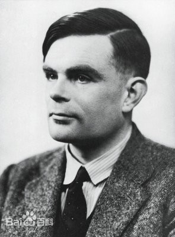

Alan Turing

人物简介
艾伦·麦席森·图灵（Alan Mathison
Turing），1912年6月23日—1954年6月7日，英国数学家、逻辑学家，被称为计算机科学之父，人工智能之父。1931年图灵进入剑桥大学国王学院，毕业后到美国普林斯顿大学攻读博士学位，第二次世界大战爆发后回到剑桥，后曾协助军方破解德国的著名密码系统Enigma，帮助盟军取得了二战的胜利。
1952年，英国政府对图灵的同性恋取向定罪，随后图灵接受化学阉割（雌激素注射）。1954年6月7日，图灵吃下含有氰化物的苹果中毒身亡，享年41岁。2013年12月24日，在英国司法大臣克里斯·格雷灵的要求下，英国女王伊丽莎白二世向图灵颁发了皇家赦免。
人物生平
-
1931年，图灵考入剑桥大学国王学院，由于成绩优异而获得数学奖学金。在剑桥，他的数学能力得到充分的发展。
-
1937年，图灵发表的另一篇文章“可计算性与λ可定义性”则拓广了丘奇（Church）提出的“丘奇论点”，形成“丘奇-图灵论点”，对计算理论的严格化，对计算机科学的形成和发展都具有奠基性的意义。
-
1945年，图灵结束了在外交部的工作，他试图恢复战前在理论计算机科学方面的研究，并结合战时的工作，具体研制出新的计算机来。
-
1945年到1948年，他在英国国家物理实验室工作，负责自动计算引擎的研究。
-
1948年，图灵接受了曼彻斯特大学的高级讲师职务，并被指定为曼彻斯特自动数字计算机(Madam)项目的负责人助理，具体领导该项目数学方面的工作，作为这一工作的总结。
-
1951年，由于在可计算数方面所取得的成就，成为英国皇家学会会员，时年39岁。
-
1952年，图灵的同性伴侣协同一名同谋一起闯进了图灵的房子实施盗窃。图灵为此而报警。但是警方的调查结果使得他被控以“明显的猥亵和性颠倒行为”（同性恋）。
-
1954年6月7日，图灵被发现死于家中的床上，床头还放着一个被咬了一口的泡过氰化物的苹果。警方调查后认为是剧毒的氰化物中毒，调查结论为自杀。
成就
- 可计算性理论
- 判定问题
- 电子计算机
- 人工智能
- 数理生物学
- 图灵试验
人物评价
-
图灵不但以破译密码而名闻天下，他在人工智能和计算机等领域也作出了重要贡献，他常被认为是现代计算机科学的创始人。战争结束后，在曼彻斯特大学工作的他研制了“曼彻斯特马克一号”———著名的现代计算机之一。1999年，他被《时代》杂志评选为20世纪100个最重要的人物之一。
-
2012年，是一个伟人的百年诞辰。即使我们把所有崇高的致意奉献给他都不为过。他就是艾伦·图灵。100年前，艾伦·图灵诞生在一个文化和科技水平都与如今完全不同的时代里，但这并不影响他成为最伟大最值得纪念的人之一。他为计算机领域奠定了不可埋没的基础，没有他就没有的计算机。（图灵奖获得者、Google资深副总裁兼首席因特网专家文特·瑟夫评价）
-
图灵在破解二战德军密码、拯救国家上发挥了关键作用，是一个“了不起的人”。（英国首相卡梅伦评价）
后世纪念
图灵奖
为了纪念他对计算机科学的巨大贡献，由美国计算机协会（ACM）于1966年设立一年一度的图灵奖，以表彰在计算机科学中做出突出贡献的人，图灵奖被喻为“计算机界的诺贝尔奖”。